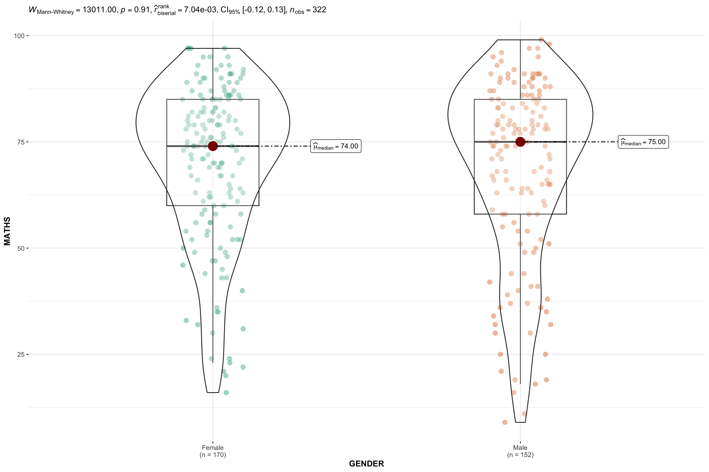
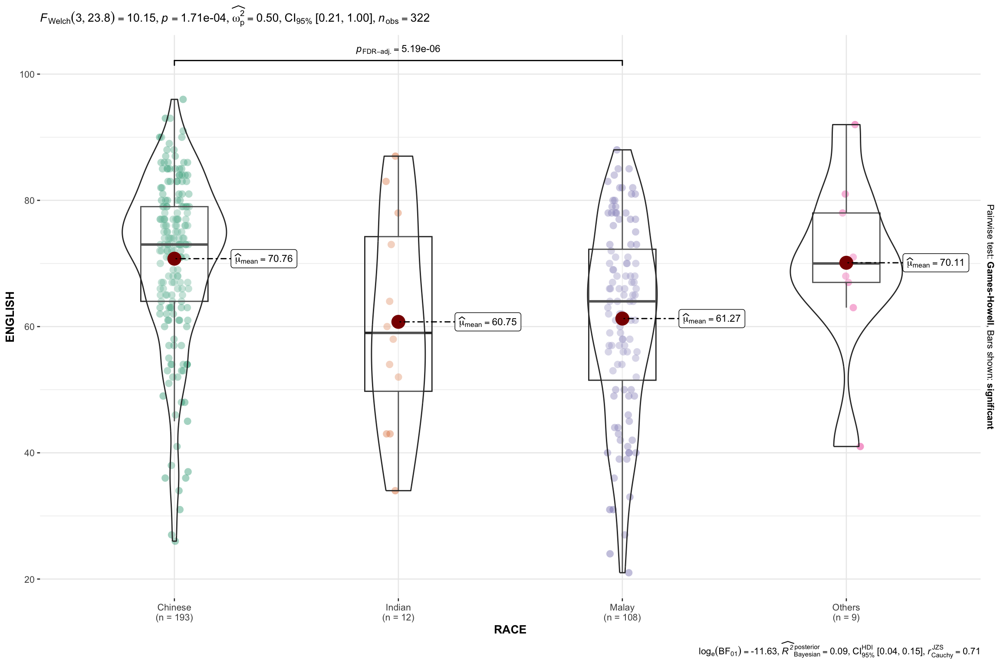
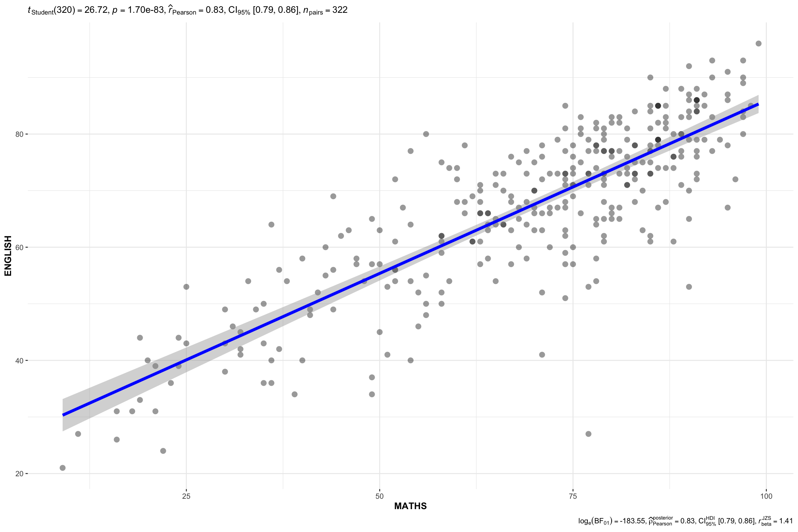

pacman::p_load(haven,SmartEDA,tidyverse,tidymodels)In-class Exercise 4
1 Getting Started
1.1 Installing and Loading R Packages
1.2 Importing data into R environment
exam_data <- read_csv("data/Exam_data.csv")1.3 Plotting graph with boxplot
ggplot(exam_data,
aes(x = ENGLISH,
y = CLASS)) +
geom_boxplot()ggplot(exam_data,
aes(x = CLASS,
y = ENGLISH)) +
geom_boxplot()
1.4 Plotting ridgeline graph: ggridges method (9.3.1)
There are several ways to plot ridgeline plot with R. In this section, you will learn how to plot ridgeline plot by using ggridges package.
ggridges package provides two main geom to plot gridgeline plots, they are: geom_ridgeline() and geom_density_ridges(). The former takes height values directly to draw the ridgelines, and the latter first estimates data densities and then draws those using ridgelines.
The ridgeline plot below is plotted by using geom_density_ridges().
pacman::p_load(ggdist, ggridges, ggthemes,
colorspace, tidyverse)ggplot(exam_data,
aes(x = ENGLISH,
y = CLASS)) +
geom_density_ridges(
scale = 3,
rel_min_height = 0.01,
bandwidth = 3.4,
fill = lighten("#7097BB", .3), # light blue
color = "white"
) +
scale_x_continuous( # ggplot function
name = "English grades",
expand = c(0, 0)
) +
scale_y_discrete(name = "Class", expand = expansion(add = c(0.2, 2.6))) + ## ggplot function
theme_ridges()1.5 Adding the Dot Plots with stat_dots() (9.4.3)
We will add the third geometry layer using stat_dots() of ggdist package. This produces a half-dotplot, which is similar to a histogram that indicates the number of samples (number of dots) in each bin. We select side = “left” to indicate we want it on the left-hand side.
1.5.1 Step 1…
ggplot(exam_data,
aes(x = RACE,
y = ENGLISH)) +
stat_halfeye(adjust = 0.5, # the dangling half probability density
justification = -0.2,
.width = 0,
point_colour = NA) 1.5.2 Step 2, adding in the Dot Plots with stat_dots()
ggplot(exam_data,
aes(x = RACE,
y = ENGLISH)) +
stat_halfeye(adjust = 0.5, # the dangling half probability density
justification = -0.2,
.width = 0,
point_colour = NA) +
geom_boxplot(width = .20,
outlier.shape = NA) +
stat_dots(side = "left", # each dot represents one student
justification = 1.2,
binwidth = .5,
dotsize = 2)1.6 The Finishing Touch (9.4.4)
Lastly, coord_flip() of ggplot2 package will be used to flip the raincloud chart horizontally to give it the raincloud appearance. At the same time, theme_economist() of ggthemes package is used to give the raincloud chart a professional publishing standard look.
ggplot(exam_data,
aes(x = RACE,
y = ENGLISH)) +
stat_halfeye(adjust = 0.5,
justification = -0.2,
.width = 0,
point_colour = NA) +
geom_boxplot(width = .20,
outlier.shape = NA) +
stat_dots(side = "left",
justification = 1.2,
binwidth = .5,
dotsize = 1.5) +
coord_flip() +
theme_economist()pacman::p_load(ggstatsplot, tidyverse)1.7 Two-sample mean test: ggbetweenstats() (10.3.6)
ggbetweenstats(
data = exam_data,
x = GENDER,
y = MATHS,
type = "np", # non parametric - non conformance to normality assumption
messages = FALSE
)
1.8 Oneway ANOVA Test: ggbetweenstats() method (10.3.7)
ggbetweenstats(
data = exam_data,
x = RACE,
y = ENGLISH,
type = "p",
mean.ci = TRUE,
pairwise.comparisons = TRUE,
pairwise.display = "s",
p.adjust.method = "fdr",
messages = FALSE
)
1.9 Significant Test of Correlation: ggscatterstats() (10.3.8)
ggscatterstats(
data = exam_data,
x = MATHS,
y = ENGLISH,
marginal = FALSE,
)
1.10 Significant Test of Association (Depedence) : ggbarstats() methods (10.3.9)
exam1 <- exam_data %>%
mutate(MATHS_bins =
cut(MATHS,
breaks = c(0,60,75,85,100))
)
ggbarstats(exam1,
x = MATHS_bins,
y = GENDER)